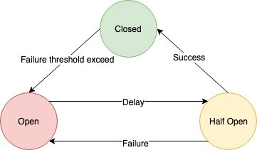

🔧 What is the Circuit Breaker Pattern?
The Circuit Breaker is a resilience pattern designed to prevent cascading failures in distributed systems by monitoring service health and halting calls to unhealthy services.
It helps block repeated failed calls, giving failed components time to recover and preserving overall system stability :contentReference[oaicite:1]{index=1}.
⏱ States of Circuit Breaker
- Closed: Normal mode, all requests go through. If failures exceed threshold, transitions to “Open”.
- Open: Immediately reject requests without calling the service. After a configured timeout, moves to “Half‑open”.
- Half‑open: Allows limited trial requests. If they succeed, closes; if they fail, reopens :contentReference[oaicite:2]{index=2}.
⚠️ Why Use It?
- Prevents repeated failures from overwhelming services and causing cascades :contentReference[oaicite:3]{index=3}.
- Works well alongside retry, timeout, and fallback patterns to build fault-tolerant systems :contentReference[oaicite:4]{index=4}.
- Improves user experience by fast-failing and avoiding long timeouts :contentReference[oaicite:5]{index=5}.
🛠 Implementation Guidelines
Typical configuration requires:
- Failure threshold (e.g. 5 failures in 10 seconds).
- Timeout before “half‑open” state.
- Trial request limit in “half‑open”.
Common libraries include Resilience4j (Java), Polly (.NET), and PyBreaker (Python) :contentReference[oaicite:6]{index=6}.
📦 Integration with Other Patterns
- Timeouts: Prevent long-waiting calls.
- Retry: On failure, retry with back‑off, but controlled by circuit state.
- Fallback: Provide default response or graceful degradation when circuit is open.
These combined form a resilient system–circuit breaker prevents overload, retry handles transient failures, fallback ensures continuity. :contentReference[oaicite:7]{index=7}
📈 Benefits & Trade-offs
- ✅ Limits resource waste and speeds up failure handling.
- ⚖️ Risk of false‑tripping—partial failures may cause unnecessary circuit opens :contentReference[oaicite:8]{index=8}.
- 🔄 Needs careful tuning of thresholds and timers.
- 📊 Complex in microservices with multiple shards or segmented failures—you may use sub‑circuit breakers per sub‑service :contentReference[oaicite:9]{index=9}.
📊 Diagram: Circuit Breaker Flow & States
The following diagram illustrates the key states (Closed, Open, Half-Open) and the flow of requests through the Circuit Breaker.
Figure 1: State transitions: Closed → Open → Half‑Open and back
Figure 2: Request flow – normal, failure, retry
👴 Attention Points for Senior / Lead Engineers
- Threshold Sensitivity: Adjust based on SLA and real‑world traffic patterns.
- Granularity: For microservices offering composite operations, separate circuits per endpoint or shard to avoid overbroad failures.
- State Storage: In distributed systems, choose centralized store (Redis, DB) vs local—impacts consistency.
- Observability: Log state transitions, counts; integrate with metrics and alerting for proactivity.
- Polyglot Consistency: Ensure consistent behavior across services using different libraries or languages.
- Recovery Strategy: Design robust half‑open logic—consider slow ramp‑up, exponential back‑off, or isolate test traffic.
- Resilience Testing: Simulate failures and load to validate circuit behavior (e.g. chaos testing).
These considerations ensure circuits are tuned, observable, and aligned with overall system resilience strategies.